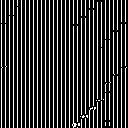

Bratz (USA) (En,Fr,Es)
EEPROM 4K Save Format Spec gbakit Built-In VRAM Tile Sheet
Cartridge Identity
- Game Code
A2RE(FamilyA2R)- Header Title
BRATZ- Maker / Revision
41/ rev0- ROM Size
- 4.0 MiB (4,194,304 B)
- Save Media
EEPROM 4K- SHA-256
fb4811eac43aa8763d7ebae1ef8296bcbc71da9623331990a42c6209d1c7e93f- Engine / SDK Group
comm-020(13 families)
Screenshots


Battery Save Format Specification
Open Full Save Format SpecDownload Sample .sav (512 B)Download save-format.json
- Specification Coverage
- 18 mapped fields · 0 verified checksum(s) · Confidence: MEDIUM
- gbakit Built-In Support
- Built-in (A2RE)
gbakit save verify A2RE save.sav
gbakit save decode A2RE save.sav
gbakit save fix A2RE damaged.sav -o repaired.savROM Assets, Compression & Audio
- BIOS Compression
- LZ77 (
0x10): 381 streams · RLE (0x30): 661 streams - ROM Pointer Tables
- 11 tables (1 pointing to validated compressed streams)
- SDK Backup Tags
EEPROM_V122- VRAM / Palette Snapshot
- 2,048 non-zero 8×8 tiles · 1 palettes · Direct ROM matches: 0 VRAM blocks, 0 palette blocks

Hardware MMIO Subsystems
audio_sound0x802fa44dma_transfer0x802fa44ppu_display0x802624c,0x8026ef8,0x8026f52,0x8026f7a,0x8026fb4,0x8028668,0x8029f30timers0x802fa44
Regional Variants & Revisions (Family A2R)
- Bratz (Europe) (En,Fr,De,Es,It) (
A2RP, 4 MiB)